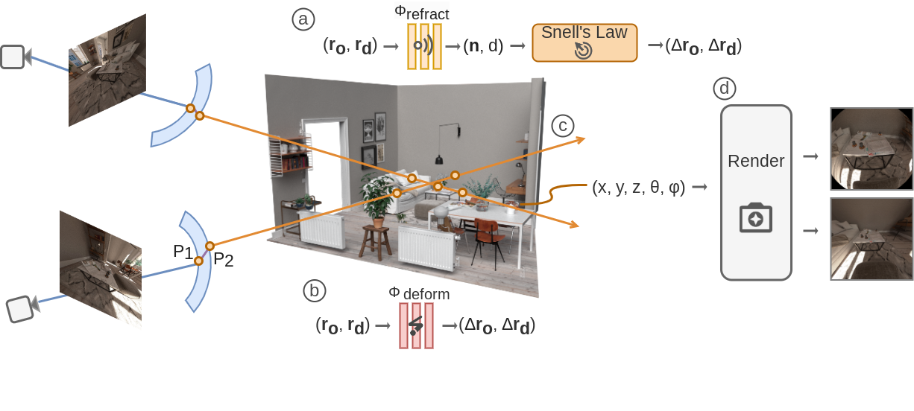
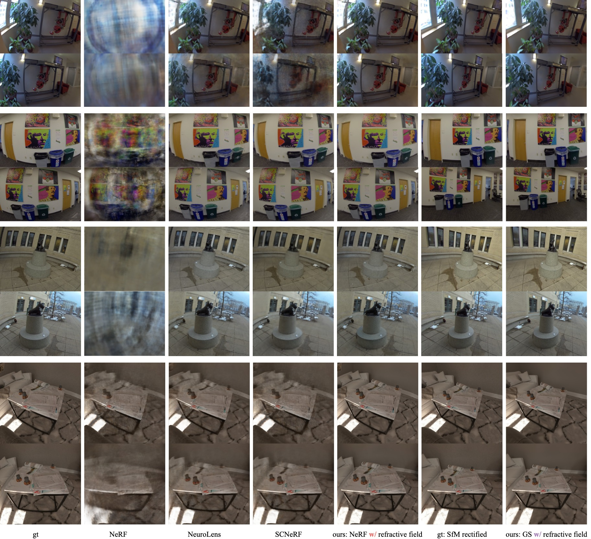

Recent extended reality headsets and field robots have adopted covers to protect the front-facing cameras from environmental hazards and falls. The surface irregularities on the cover can lead to optical aberrations like blurring and non-parametric distortions. Novel view synthesis methods like NeRF and 3D Gaussian Splatting are ill-equipped to synthesize from sequences with optical aberrations. To address this challenge, we introduce SynthCover to enable novel view synthesis through protective covers for downstream extended reality applications. SynthCover employs a Refractive Field that estimates the cover's geometry, enabling precise analytical calculation of refracted rays. Experiments on synthetic and real-world scenes demonstrate our method's ability to accurately model scenes viewed through protective covers, achieving a significant improvement in rendering quality compared to prior methods. We also show that the model can adjust well to various cover geometries with synthetic sequences captured with covers of different surface curvatures. To motivate further studies on this problem, we provide the benchmarked dataset containing real and synthetic walkable scenes captured with protective cover optical aberrations.

SynthCover estimates the refractive field to enhance NeRF and Gaussian Splatting rendering quality.
Our method improves over previous appraoches, enabling novel view synthesis approaches NeRF and 3DGS to render cover-aberrated images.This work is inspired by many recent works in the field of novel view synthesis and aberrated image rendering.
SCNeRF introduces a self-calibrating module for NeRF.
NeuroLens introudces invertible network to model aberrated images.
We derive a general ray refraction model for rendering cameras covered by curved glasses, a common hardware configuration in recent extended reality devices.